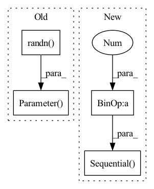

Pattern ID :692

Before Change
nn.LayerNorm(dim) if dual_patchnorm else None,
)
self.axial_pos_emb = nn.Parameter(torch.randn(2, patch_height_width, dim) * 0.02)
self.to_pixels = nn.Sequential(
LayerNorm(dim),
nn.Linear(dim, pixel_patch_dim),
After Change
// axial positional embeddings, parameterized by an MLP
pos_emb_dim = dim // 2
self.axial_pos_emb_height_mlp = nn.Sequential(
Rearrange("... -> ... 1"),
nn.Linear(1, pos_emb_dim),
nn.SiLU(),
nn.Linear(pos_emb_dim, pos_emb_dim),
nn.SiLU(),
nn.Linear(pos_emb_dim, dim)
)
self.axial_pos_emb_width_mlp = nn.Sequential(
Rearrange("... -> ... 1"),
nn.Linear(1, pos_emb_dim),
nn.SiLU(),
nn.Linear(pos_emb_dim, pos_emb_dim),
nn.SiLU(),
nn.Linear(pos_emb_dim, dim)
)
// nn.Parameter(torch.randn(2, patch_height_width, dim) * 0.02)
self.to_pixels = nn.Sequential(
In pattern: SUPERPATTERN
Frequency: 3
Non-data size: 4
Instances
Fragment ID: 1656040
Project Name: lucidrains/recurrent-interface-network-pytorch
Commit Name: b323532e40464af272a7a4e43275fb70579232ae
Time: 2023-03-05
Author: lucidrains@gmail.com
File Name: rin_pytorch/rin_pytorch.py
Class Name: RIN
Method Name: __init__
Parent Class: nn.Module
Fragment ID: 1656031
Project Name: lucidrains/etsformer-pytorch
Commit Name: efd13ff72791a8a937a7f61515cb8823d6642c18
Time: 2022-03-20
Author: lucidrains@gmail.com
File Name: etsformer_pytorch/etsformer_pytorch.py
Class Name: ClassificationWrapper
Method Name: __init__
Parent Class: nn.Module
Fragment ID: 1656035
Project Name: lucidrains/glom-pytorch
Commit Name: 570bc6667245f45ef03ad01b42cb335bda11d728
Time: 2021-03-05
Author: lucidrains@gmail.com
File Name: glom_pytorch/glom_pytorch.py
Class Name: GroupedFeedForward
Method Name: __init__
Parent Class: nn.Module